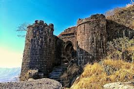

Explore Pune's Rich History

Shaniwarwada
Shaniwarwada is a historic fortification in the city of Pune. Built in 1732, it was the seat of the Peshwas of the Maratha Empire.

Forts
Sinhagad Fort, located about 30 km from Pune, is a popular trekking destination with a rich historical background.
Temples
Dagdusheth Halwai Ganpati Temple is one of the most famous Ganpati temples in Pune, attracting devotees from all over India.